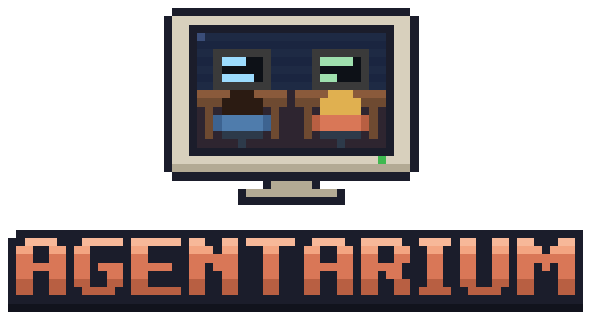

A pixel-art office for your screen. Every running Claude Code session is a character at a desk: they face the monitor while working, and turn around to wave when they need you.
macOS and Linux
curl -fsSL https://agentarium.adammorgan.ca/install.sh | sh
Windows
In PowerShell:
irm https://agentarium.adammorgan.ca/install.ps1 | iex